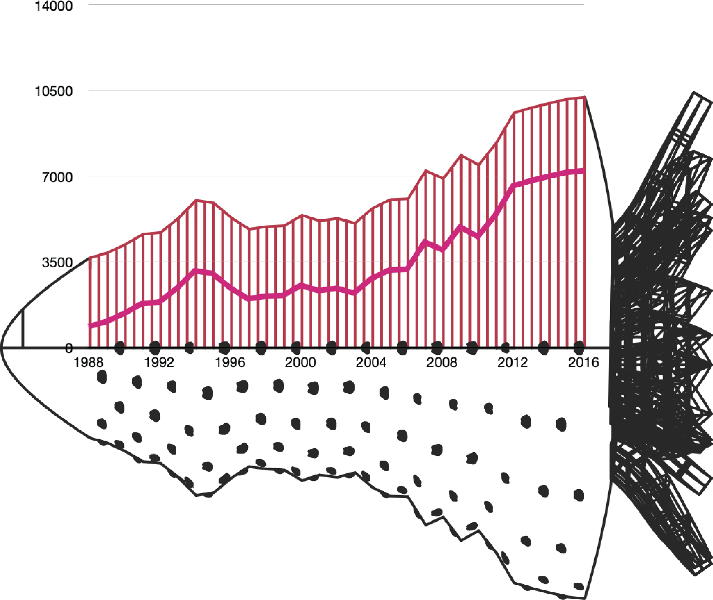
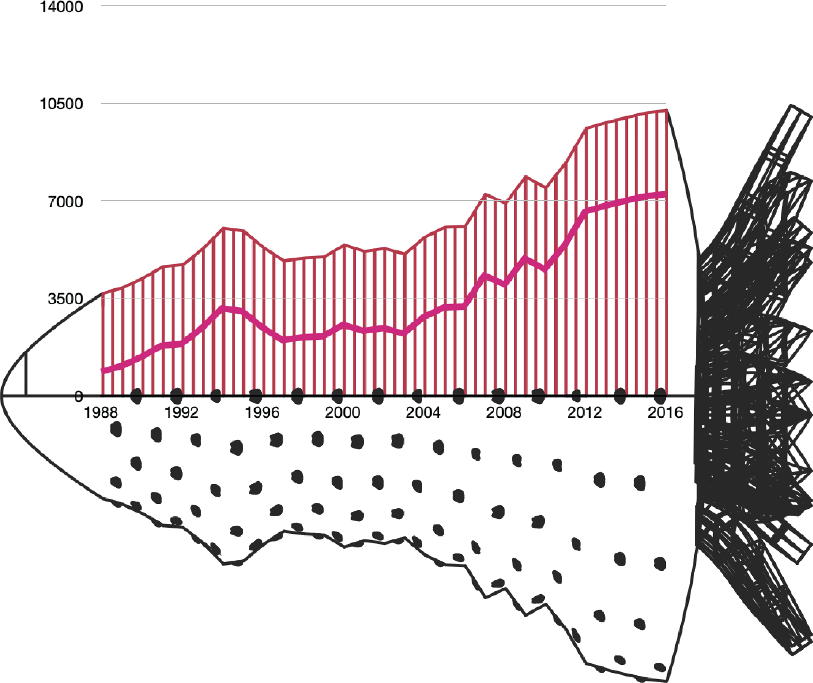

Class Project - Individual
Type
Data Sculpture / 3D priting
Year
2019
Skills
Collect & Analyze data
Generative sculpture
3D Modeling & Priting
Introduction
Thriving Green Power is a 3D printed data sculpture project demonstrating a specific observation
of the Chinese market with the importing statistics of three fruits: apple, strawberry, and avocado.
It provokes thinking about the economic and cultural
globalization behind the thriving avocado business.

Context: “Though avocado only entered the Chinese market several years ago, its imports have been soaring…it
[avocado] eventually won the hearts of middle-class foodies as it is rich in nutrition”.The uprising of avocados in
the Chinese market has been a miracle. The demand for avocados by the young middle-class has increased
roughly 1000 times more in a decade[1].
Goal: From this visualization, my viewers will realize the demand for apples and strawberries is dropping
over the years, even though the market for apples is still huge; the demand for avocado, however, boosts in a very
short time that the shape looks very unnatural. Viewers are led to think about the concept of “traditional” and “popular”, and the purpose is to raise the awareness
of a changing global market.
"Though avocado only entered the Chinese market several years ago, its imports have been soaring. In 2011, China imported 31.8 tonnes of avocado, last year the figure hit 32,100 tonnes, an increase of more than 1,000 times"
[1] China Focus: New produce from B&R countries
make their way to Chinese homes

"The Age of the World"
Mathieu Lehanneur
Generally, there are a couple of factors that contribute to the pop- ularity of a certain fruit in China:
(1) price range; (2) accessibility to the public; (3) the history; (4) positive metaphorical meaning.
If a fruit has a long consumption history, at the same time being considered as “good” or “lucky”, then
this fruit is very likely to be popular.
I found three fruits for comparison: (1) apples are traditionally a top choice for festivals and ceremonies.
It has warm red color, and also the name symbolize “peace” and “safety”; (2) strawberries and avocados are
imported foreign fruits gradually gaining popularity in modern times, both of which enjoy a short history
of few decades.
With an open and international society,
more and more customers follow the global trends, for example, a lifestyle choice.
While the domestic production of avocado stays at a high level, the demand for imported ones from Latin
America continues to roar. The avocados fly across the pacific ocean and arrive in capital cities like
Beijing or Shanghai, but also smaller towns with a hungrier taste for the exotic and novel food.
Data Collection: I downloaded the data of intertional crops and live- stock products trade to China.
The dataset includes import quantity and value of apples, strawberries and avocados in China from 1961 to 2020.
The statistics are from the Food and Agriculture Organization of the United Nations.
Data Analysis: The import quantity of apples is considerably large, with a stable increasing rate
over the years. The import quantity of strawberry and avocado didn’t sharply increase until the 1980s.
Specifi- cally, the number of imported avocados increases exponentially since 2013, and keeps going.
Data Scaling & Modeling: I embodied the data using the concept of data sculpture, which is “a direct externalization of the data,”
in terms of “perceivable presence, shape or form”[2]. I used the data of import quantity and value of avocados in China,
connected the data points as a curve and then revolved the curve 360 degrees for a shape of the sculpturehed; later I
added details to make it recognizable as a certain fruit. By playing with its size, curve and volume, I present a
fast-growing market in a visible, touchable, playful way.
 

Lastly, I held an exhibition show for this project. I 3D printed three fruit models, colored them,
and put them in a Chinese fruit gift basket. In the show, audiences got to read my motivation for
creation and touched the “data” with their own hands, adding another layer of interaction.
In the near future, how will avocados, the green power, continue to thrive in Chinese market? Will more
consumers follow this trend where avocados are often branded as “healthy food,” “best choice for a diet?”
How to recognize the bandwagon effect behind this crazily growing market “colonialization”?

Poster for the exhibition show


datasets are from Food and Agriculture Organization of the United Nations
Grasshopper codes can be found in my Github